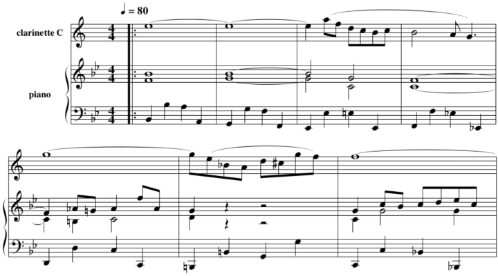
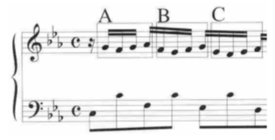
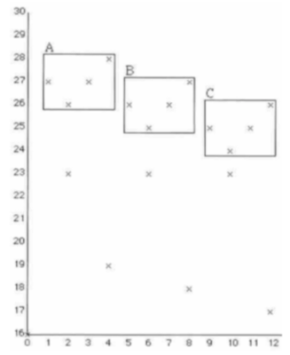
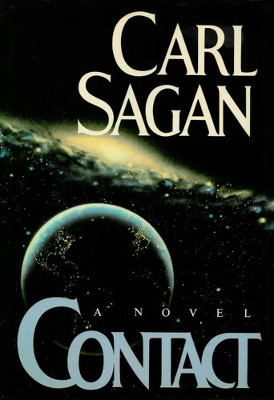
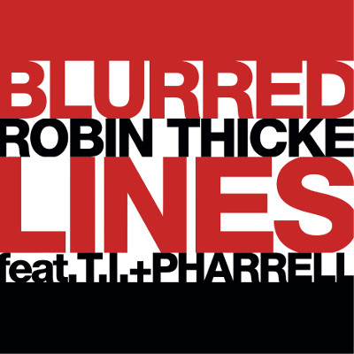

<!doctype html>
<html>
	<head>
		<meta charset="utf-8">
		<meta name="viewport" content="width=device-width, initial-scale=1.0, maximum-scale=1.0, user-scalable=no">

		<title>Computational Musicology, ????, Profit</title>

		<link rel="stylesheet" href="css/reveal.css">
		<link rel="stylesheet" href="css/theme/solarized.css">

		<!-- Theme used for syntax highlighting of code -->
		<link rel="stylesheet" href="lib/css/zenburn.css">

		<!-- Printing and PDF exports -->
		<script>
			var link = document.createElement( 'link' );
			link.rel = 'stylesheet';
			link.type = 'text/css';
			link.href = window.location.search.match( /print-pdf/gi ) ? 'css/print/pdf.css' : 'css/print/paper.css';
			document.getElementsByTagName( 'head' )[0].appendChild( link );
		</script>
	</head>
	<body>
		<div class="reveal">
			<div class="slides">
                <section data-markdown>
                    <script type="text/template">
                        # Computational Musicology, ????, Profit

                        [@ctford](https://twitter.com/ctford)/[ThoughtWorks](https://thoughtworks.com)

                        [Paper](http://dl.acm.org/authorize?N19419)

                        [Code examples](https://github.com/ctford/kolmogorov-music)
                    </script>
                </section>

                <section data-markdown>
                    <script type="text/template">
                        ## Computational Musicology, ????, Profit

                        > "Computational musicology is broadly
                        > defined as the study of music by means of
                        > computer modelling and simulation."

                        Eduardo Coutinho, Marcelo Gimenes, Joao M. Martins and Eduardo R. Miranda, Computational Musicology: An Artificial Life Approach
                    </script>
                </section>

                <section data-markdown>
                    <script type="text/template">
                      ## Programming Paradigms

                      > "We would like to study Mozart’s music the way scientists
                      > analyze the spectrum of a distant star."

                      > "Imagine formulating 'laws' for television screenplays,
                      > taking them for natural phenomenon uninfluenced by custom
                      > or constraint of commerce."

                      Marvin Minksy, Music, Mind and Meaning.
                    </script>
                </section>

                <section data-markdown>
                    <script type="text/template">
                      ## Air on the \G String

                       

                       Johann Sebastian Bach
                    </script>
                </section>

                <section data-markdown>
                    <script type="text/template">
                      ## Analysis by Compression

                      
                      

                      David Meredith
                    </script>
                </section>

                <section data-markdown>
                    <script type="text/template">
                      ## Analysis by Compression

                      > "I will propose that a
                      > musical analysis can be modelled as an algorithm or
                      > computer program and that the length of this algorithmic
                      > representation can be used as an indication of the quality of the analysis."

                      David Meredith, Analysis by Compression
                    </script>
                </section>

                <section data-markdown>
                    <script type="text/template">
                      ## The Library of Babel

                      

                      Jorge Luis Borges
                    </script>
                </section>

                <section data-markdown>
                    <script type="text/template">
                      ## The Library of Babel

                      > "Some shelf in some hexagon (men reasoned) there
                      > must exist a book which is the formula and perfect compendium of
                      > all the rest."

                      Jorge Luis Borges, The Library of Babel
                    </script>
                </section>

                <section data-markdown>
                    <script type="text/template">
                      ## Contact

                      

                      Carl Sagan
                    </script>
                </section>

                <section data-markdown>
                    <script type="text/template">
                      ## Flutter

                      

                      Autechre
                    </script>
                </section>

                <section data-markdown>
                    <script type="text/template">
                      ## Flutter

                      > "Have a lawyer and a musicologist present at all
                      > times to confirm the non repetitive nature of the music in the event
                      > of police harassment."

                      Autechre, Anti EP
                    </script>
                </section>

                <section data-markdown>
                    <script type="text/template">
                      ## Blurred Lines

                      

                      Robin Thicke, T.I., Pharrell Williams
                    </script>
                </section>

                <section data-markdown>
                    <script type="text/template">
                      ## Conclusion

                      * Computational musicology
                      * ????
                      * Profit
                    </script>
                </section>

                <section data-markdown>
                    <script type="text/template">
                      ## Conclusion

                      * Computational musicology
                      * *Copyright litigation*
                      * Profit!
                    </script>
                </section>

                <section data-markdown>
                    <script type="text/template">
                      ## Conclusion

                      * Computational musicology can help explain music.
                      * Code can be interpreted in a literary mode.
                      * Music and literature can respond to computational ideas.
                    </script>
                </section>
			</div>
		</div>

		<script src="lib/js/head.min.js"></script>
		<script src="js/reveal.js"></script>

		<script>
			// More info https://github.com/hakimel/reveal.js#configuration
			Reveal.initialize({
				history: true,

				// More info https://github.com/hakimel/reveal.js#dependencies
				dependencies: [
					{ src: 'plugin/markdown/marked.js' },
					{ src: 'plugin/markdown/markdown.js' },
					{ src: 'plugin/notes/notes.js', async: true },
					{ src: 'plugin/highlight/highlight.js', async: true, callback: function() { hljs.initHighlightingOnLoad(); } }
				]
			});
		</script>
	</body>
</html>
